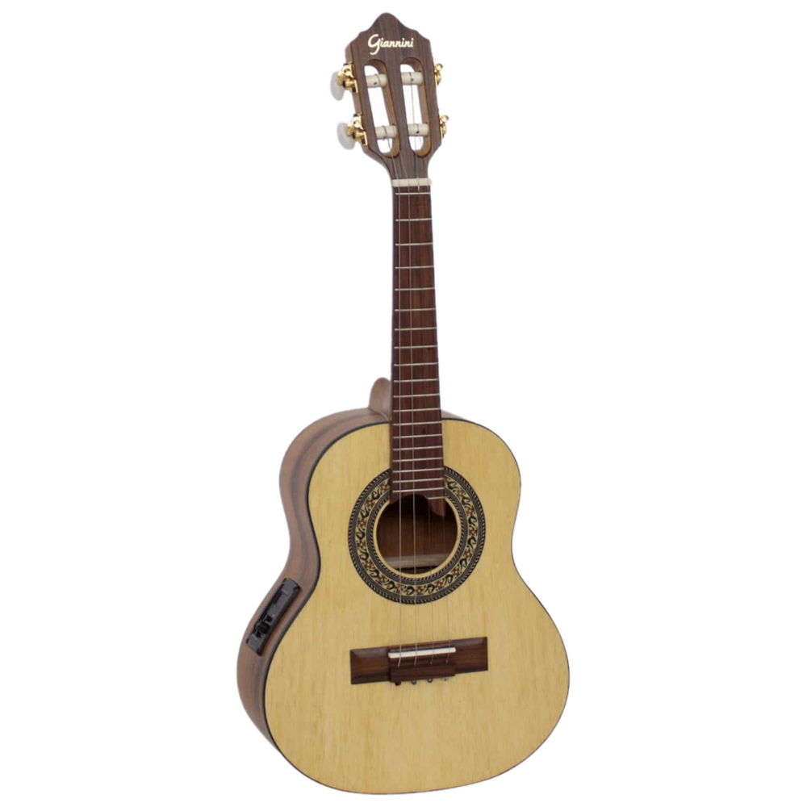

Carnival in Brazil is a sonic spectacle, where the pulsating beats of music take center stage, infusing the air with an irresistible energy. At the heart of this auditory carnival is the rhythmic and vibrant genre of samba, a musical tradition deeply intertwined with the cultural fabric of Brazil.
Rooted in Afro-Brazilian traditions, samba is the rhythmic heartbeat of Brazil, particularly during Carnival. A fusion of European, indigenous, and Afro-Brazilian influences, samba's core instruments — surdo drums, tamborim, and repinique — create a dynamic soundscape. With syncopated patterns and infectious swing, samba is inherently danceable. During Carnival, "samba-enredo" songs narrate themes and showcase technical prowess. The Sambadrome in Rio de Janeiro hosts a rhythmic spectacle of precision and exuberance.
Traditional Instruments: The distinctive sounds of samba are brought to life by an array of traditional instruments, including drums, tambourines, and percussion instruments. This ensemble creates a sonic palette that is both rich and dynamic.
Surdo:A large, deep bass drum with a wide body. Provides the foundational rhythm and heartbeat of samba music. Different-sized surdos create a layered and dynamic percussion ensemble. |
|
Tamborim:A small, shallow drum with a single drumhead. Adds high-pitched, intricate patterns to the samba rhythm. Played with a stick or hands, contributing to the lively and complex rhythmic structure. |
|
Cuíca:A friction drum with a unique squeaky sound. Adds special effects and distinctive tones to samba compositions. Played by rubbing a stick inside the drumhead, altering pitch and creating a characteristic sound. |
|
Agogô:A bell with two or more differently pitched tones. Provides sharp accents and helps maintain the tempo. Played by striking with a stick, often in a rhythmic pattern, adding a metallic element to the ensemble. |
|
|  |
Cavaquinho:A small, four-stringed instrument resembling a miniature guitar. Provides melodic accompaniment and rhythmic support. Strummed or plucked, the cavaquinho contributes to the harmonic structure of samba and other Brazilian music. |
In essence, Carnival music is more than a backdrop; it is the heartbeat of a nation's celebration. The melodies of samba, the thematic richness of samba-enredo, and the timeless classics collectively create a sonic tapestry that captures the spirit, diversity, and sheer exuberance of Brazil's Carnival. It's a celebration where every note is a call to revelry, inviting all to dance to the rhythm of a cultural legacy.